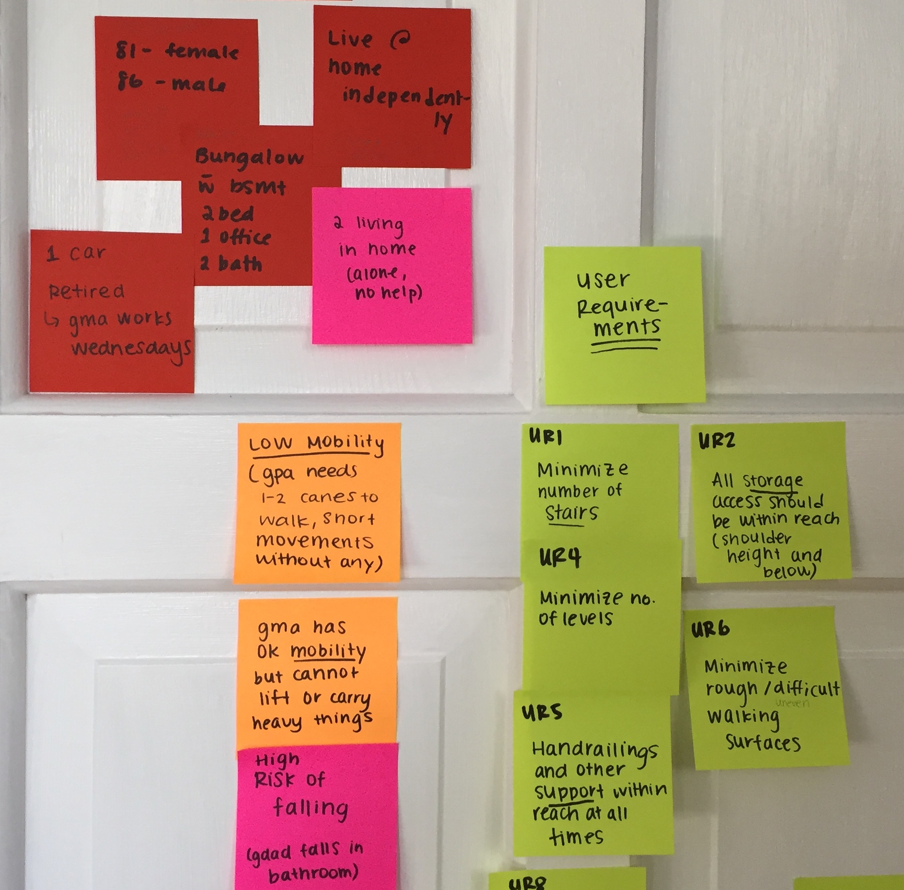

Project: Backyard Demolition
In January 2017, I visited my grandparents' house and noticed — more than ever before — that their backyard was in a state of neglect. Their deck was completely rotting away; gardening tools strewn everywhere. Old planter pots gathering precipitation, a huge awning rusting and crumbling, and an old garden hut caved in on itself. The back half of their property was completely unusable.
I knew that I would have some free time in the coming summer, so I went back in April 2017 to discuss redoing their backyard as a summer project.
Initial consultation
Pictures of the initial consult show the state of deterioration.

Problem Definition
Client profile
- 81 y/o female + 86 y/o male
- live @ home independently
- house = 3 bed, 1 bath bungalow with unfinished basement
- 2 living in home alone, no outside help
- 1 car
- retired, but female works once weekly
- low mobility
- male needs 1-2 canes or walker to walk, short unstable shuffling without any aids
- female has okay mobility
- high risk of falling
- outside tasks = shovel snow + salt, mow and water front lawn (completed by neighbour)
- like to keep things clean and organized inside
- mostly spend time inside pottering around the house, watching TV
- like to collect + keep things (habit and hobby)
- hoarder (male )
User interviews
Problem statements
Based on the initial walkthrough, a number of problems were observed.
- Cluttered
- Unusable space
- Junk
- Dangerous
- Multi-level deck
- Rotting wood, rusting fixtures
- Rain collects in pots
- Improper drainage
- Fences falling down
- No proper storage system (shovels, pots lying around everywhere)
- Degraded structures
- Weeds
- Difficult to maintain
Based on the client profile and user interviews, problem statements were developed.
- [P1] The space is unusable.
- [P2] The space is dangerous.
- [P3] The space has no purpose.
- [P4] The space is cluttered and full of junk.
- [P5] I do not have a space at home where I can spend time outside.
- [P6] In the summer, it is too hot to spend time outside.
- [P7] I do not have an interest in gardening.
Objectives
User requirements
Concept generation
Crazy 8's
Crazy 8's - Carrie Ewins
Crazy 8's - Maddy Ewins
Concept sketching
Demolition
Teardown and changing project requirements
During teardown, the following fixtures were torn down:
- Woodworking shed (holes in the roof, back wall)
- Metal shed (completely caved in on itself)
- Vestibule (unnecessary storage space, old, unpermitted)
- Any deck from the back line of the house into the yard (rotting wood)
Therefore the requirements changed slightly.
Iterations and final design
Landscaping plan
After consulting with major primary and secondary stakeholders (clients, neighbours, and family members), and iterating through multiple versions of the proposed landscape plan for the backyard, a final plan was agreed upon with the clients.